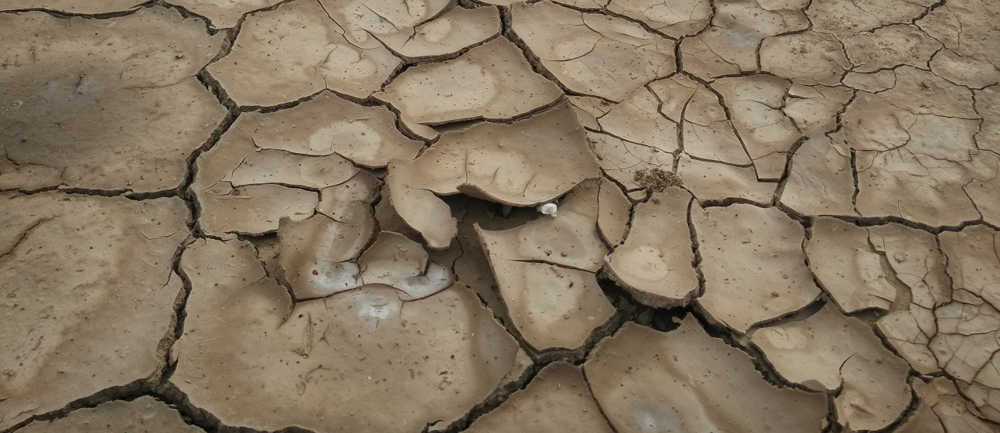

《生命地图•缤纷还是崩溃:全球生态保护地图集》：每一个关心地球，关注环境，热爱自然的人不可不读的书

TNC召集了来自不同学科领域的各国科学家组成跨学科团队全面评估世界自然保护的区域在哪里？危险是什么？机遇有哪些
汇集了来自大学政府部门研究机构保护组织共65个机构的合作成果,覆盖地球上每一片栖息地，跨越大陆河流湖泊海洋
生态保护科学家通过全球尺度的地图和数据，展示自然世界方方面面的同时告诉人类未来与自然的命运息息相关
图集没有通常人们熟悉的国界，而是记录生命万象的地图

第一次从地球生命的存在出发，描绘出各种生态群落、 动植物物种的价值及它们所面临的威胁

它告诉我们生态的服务功能和自然资本的价值，也展示了人类在自然保护中取得的成果
地图集为人们提供了一个观察世界的全新视角，将世界各个地区的保护行动纳入更为广阔的背景中
使命：保护重要的陆地和水域，使具有全球生物多样性代表意义的动物、植物和自然群落得以永续生存繁衍